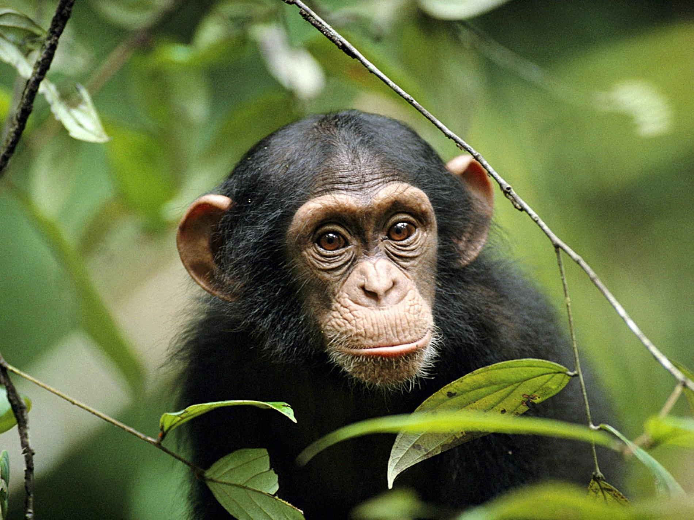
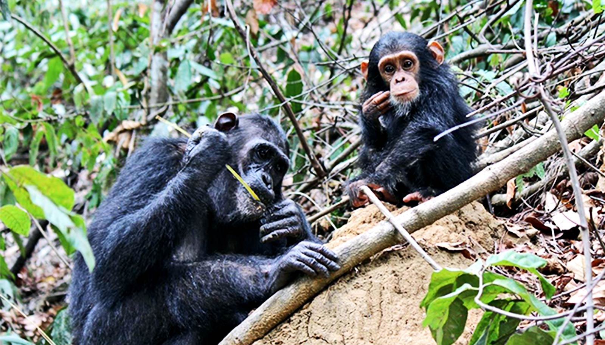

What are chimpanzees?
Chimpanzees, commonly referred to as chimps, is a species of animals that is a part of the great ape family (The same as us humans!). They can be found roaming jungles and savannas across central and western Africa. What makes these animals so special is that they share 98.7% of humans genetic material! This shouldn't come as a surprise, as humans and chimpanzees are both direct desendants of our ancient ancestor: the hominini. This split occured around 6.3 million years ago.
Just like humans, chimpanzees are highly social creatures that live in communities. They also have the ability to be bipedal, although they usually walk around on all fours. Chimpanzees vary considerably in size and appearance, although males stand between 140cm - 170cm tall. In terms of weight, most males weigh between 40-70kg while females weigh between 27-50kg. Chimps are covered by a coat of brown or black hair, except for the faces which are completely bare.
Unfortunately, chimpanzees are classified as Endangered by the International Union for Conservation of Nature's red list. At the beginning of the 20th century there were more than 1 million chimpanzees living in the wild. Today, it’s estimated that there are less than 300,000. Their population is decreasing drastically because of habitat loss, commercial bush meat hunting and the illegal wildlife trade.
Behavior
As stated earlier, chimpanzees are social animals. They live in communities that range from 20 all the way to 150 members. These communities tend to be divided into subgroups of just a few individuals that travel together. Male chimpanzees control and patrol the territory that they land upon, protect other group members and are in charge of searching for food.
Male chimpanzees stay in their natal groups while female chimpanzees tend to emigrate from one group during adolesence. Male chimpanzees exist in a linear dominance hierarchy. This means that chimpanzees at the top of the dominance hierarchy can be very aggressive in order to show their dominance. If a dominant male exits the group and then decides to rejoin later on, he must prove himself by re-establishing his dominance. These encounters can be incredibly aggresive, and occasionaly lead to violence between chimps.
Chimpanzees live, eat, hunt, and play communally in groups of 20 or 30 individuals or up to several dozen individuals. They call to each other to announce the presence of certain foods or the imminent danger of a predator. They have different warning calls for different predators, as one example of their rich language of calls and vocal expressions. Their range of sounds expresses everything from excitement to contentment to fear to joy.
Chimpanzees are also highly territorial,and are known to go as far as to kill other chimps in the name of protecting their land.
Research has shown that male and female chimps their own individual personalities, with females being more trusting and timid than males. Grooming is an important part of their social life, helping chimpanzees bond as they remove ticks, lice and dirt from each other.
Intelligence
Chimpanzee intelligence is as sophisticated and effective in their world as human intelligence is in our own world. They have been shown to be able to replicate just about everything that a five year old human is able to do. It says nothing about any limits on their ability to learn, to think, and to act from their own reason and adult status in their society. Adult chimpanzees exhibit more mature intelligence, while infants act almost exclusively on impulses. Some chimpanzees aren't that intelligent while others could almost be considered geniuses. The range of intelligence of chimpanzees varies, the same way that human intelligence does.
A chimp's ability to learn new skills and teach skills to the young is astounding. Just like humans, they're able to do everything to survive in and adapt to the situation that they're put in efficiently. The complexity of a chimpanzee's intelligence is supplemented by their ability to feel deep emotions. They feel, and they express their feelings (sometimes in dangerous ways). They use feelings as yet another way to navigate through their lives and relationships. Their feelings range from anger to exhilaration, from humor to despondence, once again resembling humans to an incredible degree.
Chimpanzees have even been shown to use tools in order to help them accomplish tasks. Although their tool would still be considered primitive by human standards, it's fascinating to see creatures that are able to mimic actions that were once thought to be exclusive to us.